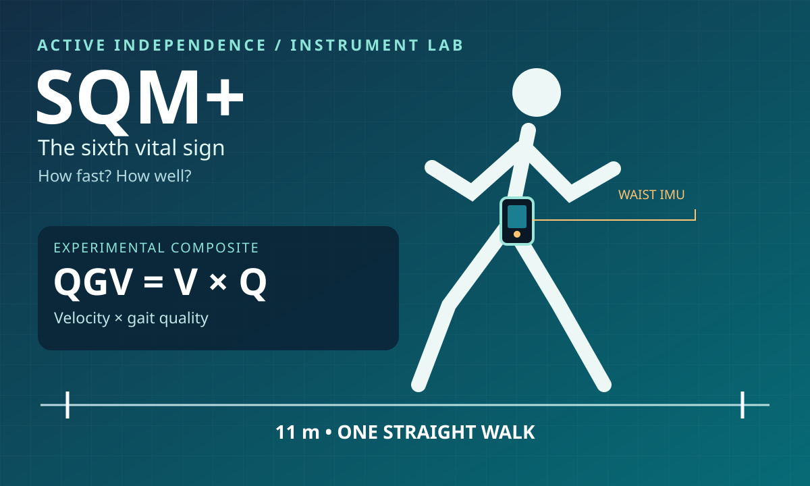

Capacity
Known distance divided by timed duration, m/s.
ACTIVE INDEPENDENCE · MEASURED HUMAN PERFORMANCE · EXPERIMENT 01
A blood pressure cuff for walking ability. Not merely how fast you walk, but how well you walk.

01 · INQUIRY
Two walkers can cover the same distance in the same time yet exhibit different patterns of torso motion. Can an affordable six-axis sensor add useful, repeatable information? The proposed composite is quality-adjusted gait velocity (QGV). Keep the original velocity and individual motion descriptors visible: the composite is a hypothesis, not a replacement for established gait speed.
Known distance divided by timed duration, m/s.
Step regularity, lateral motion (TOTTER), fore–aft motion (LURCH), vertical reference (BOB).
Preserve six-axis raw samples, timestamps, settings and candidate counts. Compare against independent measurements.
02 · INTERACTIVE EXPERIMENT
Change the elapsed time and hypothetical quality factor for a fixed 11 m course. These are illustrative values, not measured trials or clinical classifications.
Q is an adjustable teaching input, not an inferred health score.
Challenge: find two different combinations with the same QGV. What information does the composite hide? Why must V and Q remain available separately?
03 · BUILD
Button A starts a three-second countdown and marks finish. Button B cancels or changes the result page. Audible cues acknowledge controls, GO and save status. Battery, charging status and IP appear on the display. The device hosts a local Wi-Fi dashboard with Monitor, Quality, Archive and Setup tabs. The browser is optional.
50 Hz nominal six-axis sampling; LittleFS saves CSV plus JSON, including countdown data to reproduce filter warm-up. No cloud is needed. Use the physical finish button to reduce network delay. Back up files before any filesystem initialization.
04 · CAPTURE → ANALYZE → PUBLISH
05 · RESEARCH LINEAGE
The original r9 adaptive resultant-acceleration detector uses signed smoothing, adaptive envelope thresholds, hysteresis, local peaks, a 340 ms refractory period and recovery after gaps. Its handheld SIMUL benchmark does not establish waist-mounted accuracy. The new firmware uses an exploratory quality formula based on regularity and relative horizontal acceleration; no population norms or clinical cutoffs are established.
Adaptive detector, raw IMU recording, timed velocity, candidate cadence and step length, motion descriptors.
Actual hardware build, button timing, recording integrity, battery display, physical walking accuracy and test–retest reliability.
FFT and autocorrelation as independent periodicity checks; assess speed dependence, reference counts and composite validity.
See the earlier reference replay evidence and Hallway Observatory acceptance design.